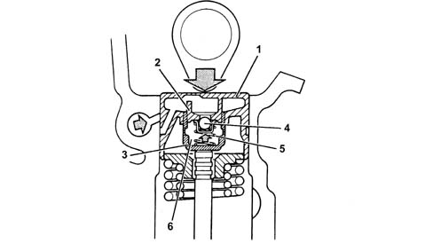
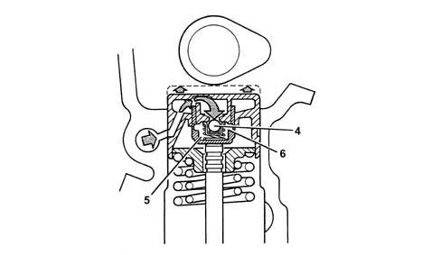
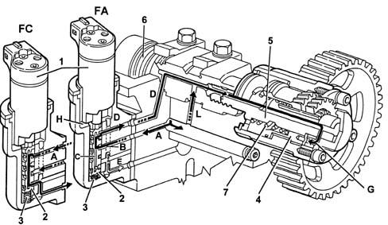
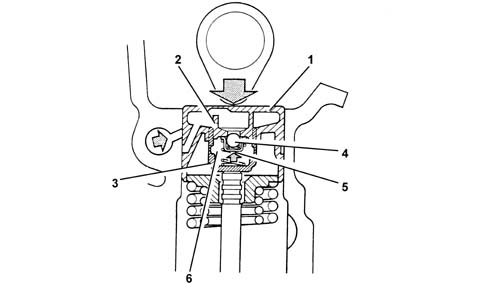
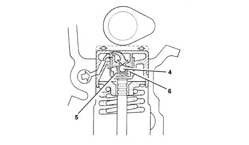
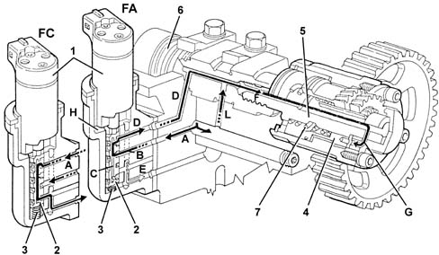

1036C OVERHEAD CAMSHAFTS (2)
- Path
- Descriptions > 10 ENGINE UNIT > 1036 TIMING SYSTEM > 1036C OVERHEAD CAMSHAFTS (2)
- Kind
- system description
- Applies to
- engines: 1.8 T.SPARK, 2.0 JTS; all production periods
- Interactive page
- https://sloeber94.github.io/elrnDB-aGt/en/#/125000267
Applies to: engines: 2.0 JTS; all production periods
CONSTRUCTION SPECIFICATIONS
Camshafts
The intake side camshaft turns on six supports while the exhaust side camshaft turns on five supports.
The camshafts are driven by a toothed belt.
Hydraulic tappets
The hydraulic tappets automatically take up valve clearance during engine service. This offers the advantage of reducing:
- maintenance operations;
- engine noise.
Operation in open stage
When camshaft cam acts on cup (1) and thus piston (2), oil trapped in chamber (6) due to closure of ball valve (4) trasmits the movement of piston (2) directly to sleeve (3) and hence the valve.
At this stage, due to the high pressure acting on the oil, a part of the oil in chamber (6) leaks through the tiny gap between piston (2) and sleeve (3).

Operation in closed stage
During valve closure, as long as the tappet pressed by the action of spring (5) follows the cam outline, a vacuum builds up inside chamber (6) that brings about opening of ball valve (6) to allow oil to enter. The oil taken into chamber (6) replaces the oil that leaked out during valve opening.

Phase transformer
The variable valve timing system is driven directly by the injection system and performs the function of altering intake valve timing on the basis of engine load and speed requirements.
Operation in closed stage (fc)
When closed phase is required (idling and maximum power zone), electromagnet (1) is deactivated. Valve slide (2) then stays up under the pressure of counterspring (3), thus preventing fluid from channel (A) from reaching the variable valve timing system.
In this case, intake valve timing remains unchanged (closed).
Operation in open stage (fa)
When the open stage is requested (average speeds at high torque) the solenoid (1) is energized thereby pushing the valve body (2) downwards.
In this position, fluid from channel (A) enters chamber (B) of the piston and then flows on through a hole into channel (C) inside the piston.
The oil can only leave the above duct via the top port (in contact with the the oil supply duct (D) to transformer) because as the valve body (2) is lowered the bottom port is not in contact with the drainage duct (E).
The oil flows through channels (D) and (F) into chamber (G), which moves the piston (4) axially toward the engine. Because the piston is fitted with external helical teeth, it is forced to turn clockwise.
Its rotation is transmittted via a splined curb toothed section to piston (5) which is tightened onto the threaded shank of camshaft (6) and transmits rotation to the shaft, thus altering intake valve timing by 25°.
When the solenoid is de-energized, the valve body (2) returns to its original position cutting off the flow of pressurised fluid to the piston (4) but allowing fluid to return to the exhaust thanks to the effect of the opposing spring (7).
Channel (L) allows the camshaft journal to be lubricated under different operating conditions.
The fluid that leaks into electromagnet chamber (H) drains out through drainage port (E).

Applies to: engines: 1.8 T.SPARK; all production periods
Hydraulic tappets
OPERATION
Camshafts
The camshafts are driven by a toothed belt.
Hydraulic tappets
The hydraulic tappets automatically take up valve clearance during engine service. This offers the advantage of reducing:
- maintenance operations
- engine noise.
OPERATION IN OPEN STAGE
When the camshaft cam acts on the cup (1) and thus the piston (2), the oil trapped in chamber (6) due to the closure of the ball valve (4) trasmits the movement of piston (2) directly to the hose (3) and consequently to the valve. At this stage, due to the high pressure acting on the oil, some of the oil in the chamber (6) leaks through the tiny gap between the piston (2) and the hose (3).

OPERATION IN CLOSED STAGE
During valve closure, as long as the tappet thrust by the action of the spring (5) follows the cam outline, a vacuum builds up inside the chamber (6) that brings about the opening of the ball valve (6) to allow oil to enter. The oil taken into chamber (6) replaces the oil that leaked out during valve opening.

Phase transformer
The variable valve timing system is driven directly by the injection system and performs the function of altering intake valve timing on the basis of engine load and speed requirements.
OPERATION IN CLOSED STAGE (FC)
When the closed phase is required (idling and maximum power zone), the solenoid (1) is de-energized therefore the valve body (2) remains raised thrust by the opposing spring (3) preventing fluid from channel (A) from reaching the variable valve timing system.
In this case, intake valve timing remains unchanged (closed).
OPERATION IN OPEN STAGE (FA)
When the open stage is requested (average speeds at high torque) the solenoid (1) is energized thereby pushing the valve body (2) downwards.
In this position, fluid from channel (A) enters chamber (B) of the piston and then flows on through a hole into channel (C) inside the piston.
The oil can only leave the above duct via the top port (in contact with the the oil supply duct (D) to transformer) because as the valve body (2) is lowered the bottom port is not in contact with the drainage duct (E).
The oil flows through channels (D) and (F) into chamber (G), which moves the piston (4) axially toward the engine. Because the piston is fitted with external helical teeth, it is forced to turn clockwise.
Its rotation is transmittted via a splined curb toothed section to piston (5) which is tightened onto the threaded shank of camshaft (6) and transmits rotation to the shaft, thus altering intake valve timing by 25°.
When the solenoid is de-energized, the valve body (2) returns to its original position cutting off the flow of pressurised fluid to the piston (4) but allowing fluid to return to the exhaust thanks to the effect of the opposing spring (7).
Channel (L) allows the camshaft journal to be lubricated under different operating conditions.
The fluid that leaks into electromagnet chamber (H) drains out through drainage port (E).
